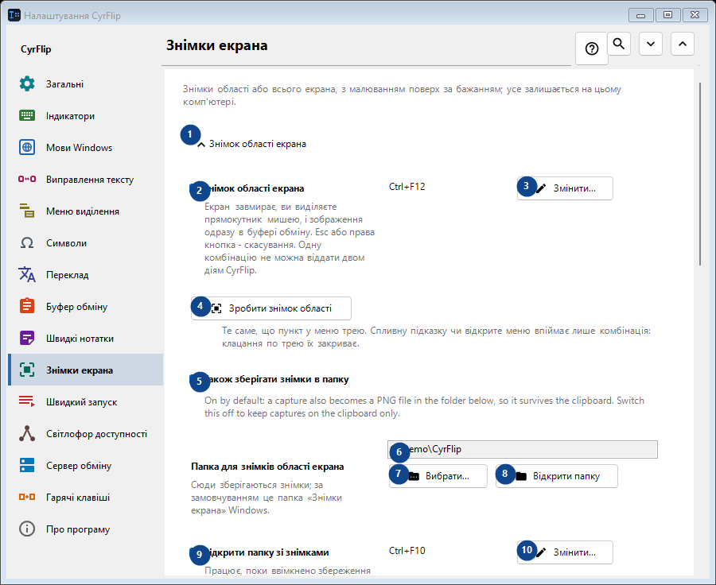
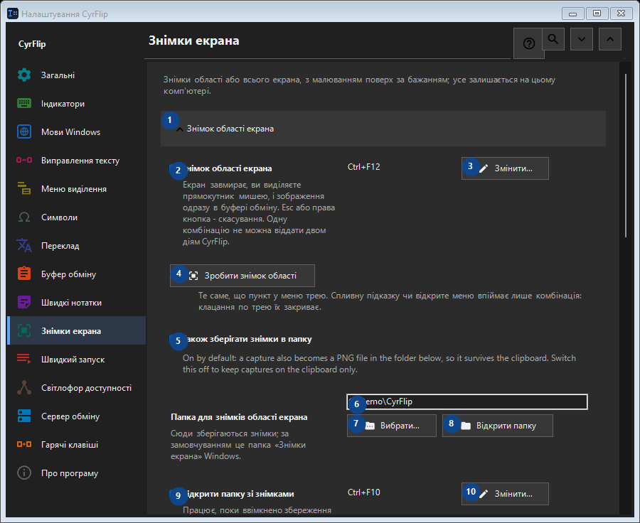

Знімки екрана
Для чого це вікно
Знімки області або всього екрана, з малюванням поверх за бажанням; усе залишається на цьому комп'ютері.


Порядок дій
Налаштування застосовуються одразу. Обов’язкового порядку немає; користуйтеся групами нижче.
Елементи
1. Знімок області екрана
Скористайтеся командою, коли потрібна вказана дія. Прочитайте запит підтвердження перед згодою.
Ваші сполучення клавіш2. Знімок області екрана
Екран завмирає, ви виділяєте прямокутник мишею, і зображення одразу в буфері обміну. Esc або права кнопка - скасування. Одну комбінацію не можна віддати двом діям CyrFlip.
Ваші сполучення клавіш3. Змінити - Знімок області екрана
Скористайтеся командою, коли потрібна вказана дія. Прочитайте запит підтвердження перед згодою.
Ваші сполучення клавіш4. Зробити знімок області
Те саме, що пункт у меню трею. Спливну підказку чи відкрите меню впіймає лише комбінація: клацання по трею їх закриває.
Ваші сполучення клавіш5. Також зберігати знімки в папку
On by default: a capture also becomes a PNG file in the folder below, so it survives the clipboard. Switch this off to keep captures on the clipboard only.
Ваші сполучення клавіш6. Папка для знімків області екрана
Виберіть або введіть значення для сусіднього підпису. Перевірте його перед продовженням.
Ваші сполучення клавіш7. Вибрати - Папка для знімків області екрана
Скористайтеся командою, коли потрібна вказана дія. Прочитайте запит підтвердження перед згодою.
Ваші сполучення клавіш8. Відкрити папку - Папка для знімків області екрана
Скористайтеся командою, коли потрібна вказана дія. Прочитайте запит підтвердження перед згодою.
Ваші сполучення клавіш9. Відкрити папку зі знімками
Працює, поки ввімкнено збереження знімків у папку. Відкриває ту папку, в яку CyrFlip пише знімки. Одну комбінацію не можна віддати двом діям CyrFlip.
Ваші сполучення клавіш10. Змінити - Відкрити папку зі знімками
Скористайтеся командою, коли потрібна вказана дія. Прочитайте запит підтвердження перед згодою.
Ваші сполучення клавіш11. Знімок усього екрана
Скористайтеся командою, коли потрібна вказана дія. Прочитайте запит підтвердження перед згодою.
Ваші сполучення клавіш12. Знімок усього екрана
Одне натискання: усі дисплеї знімаються однією картинкою й одразу потрапляють у буфер обміну. Нічого не завмирає на екрані.
Ваші сполучення клавіш13. Змінити - Знімок усього екрана
Скористайтеся командою, коли потрібна вказана дія. Прочитайте запит підтвердження перед згодою.
Ваші сполучення клавіш14. Зробити знімок усього екрана
Те саме, що пункт трею «Знімок усього екрана».
Ваші сполучення клавіш15. Малювання на знімках
Скористайтеся командою, коли потрібна вказана дія. Прочитайте запит підтвердження перед згодою.
Ваші сполучення клавіш16. Малювання на знімках
Після знімка завмерла картинка залишається на екрані - малюйте на ній овали, прямокутники, лінії та стрілки.
Ваші сполучення клавіш17. Знімок області з малюванням
Capture a selected region and draw on it. One chord cannot belong to two CyrFlip actions.
Ваші сполучення клавіш18. Змінити - Знімок області з малюванням
Скористайтеся командою, коли потрібна вказана дія. Прочитайте запит підтвердження перед згодою.
Ваші сполучення клавіш19. Знімок усього екрана з малюванням
Capture every display as one picture and draw on it. One chord cannot belong to two CyrFlip actions.
Ваші сполучення клавіш20. Змінити - Знімок усього екрана з малюванням
Скористайтеся командою, коли потрібна вказана дія. Прочитайте запит підтвердження перед згодою.
Ваші сполучення клавіш21. Зробити знімок області та малювати
Те саме, що комбінація «знімок області з малюванням».
Ваші сполучення клавіш22. Зробити знімок усього екрана та малювати
Те саме, що комбінація «знімок усього екрана з малюванням».
Ваші сполучення клавіш